Sakawa, Kochi: things to do, food and stays
Sakawa · Kochi
Sakawa
Highlighted on the Kochi map.

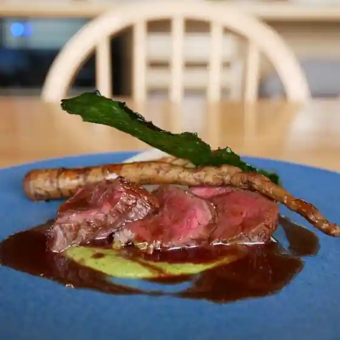
Stay
旅館明清館
Ryokan Myojo Kan
Ryokan inn in Kabuto, Sakawa with parking and a large communal bath.
Dining
自然イタリア料理 ダ ゼロ
Shizen Itaria Ryori Da Zero
大正軒
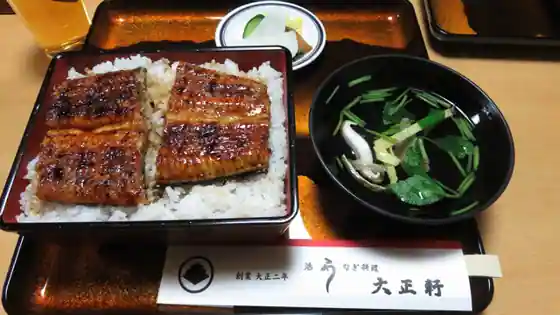
Taisho Ken
西村商店 まきのさんの道の駅佐川店
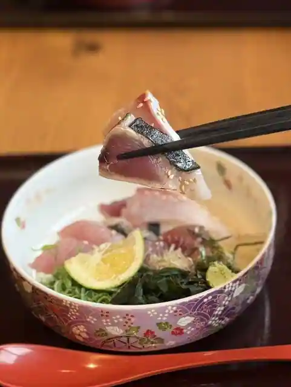
Nishimura Sho Makinosanno Michi No Eki Sagawa
旧浜口家住宅 喫茶・ご休憩スペース
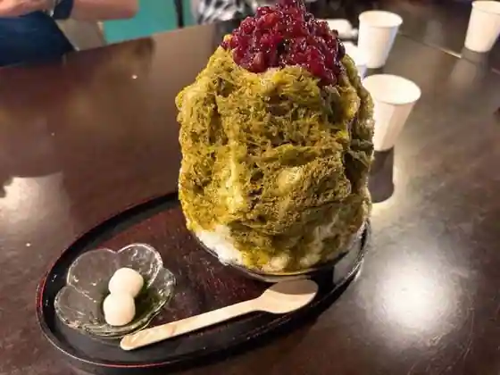
Kyu Hamaguchi Ie Jutaku Kissa Go Kyukei Supesu
まる美食堂
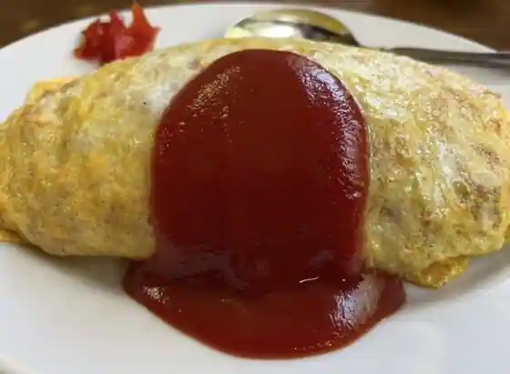
Maru Bi Shokudo
横畠アイス
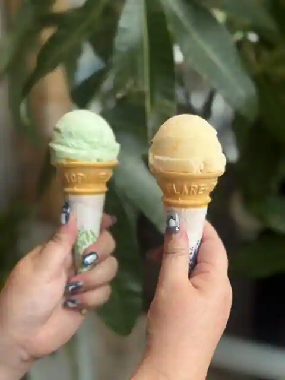
Yokohata Aisu
うどん処 わらし
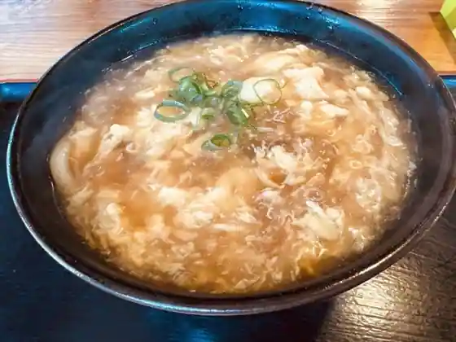
Udon Tokoro Warashi
御酒屋
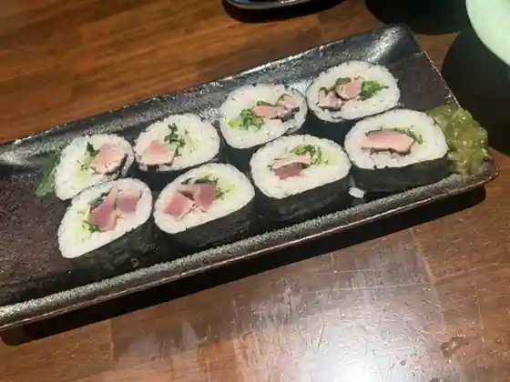
Miki Ya
まきのさんの道の駅 佐川
Makinosanno Michi No Eki Sagawa
３３ラ－メン
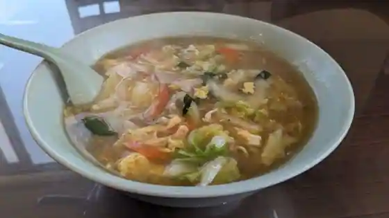
33 Ra - Men
おかしの家 Repos
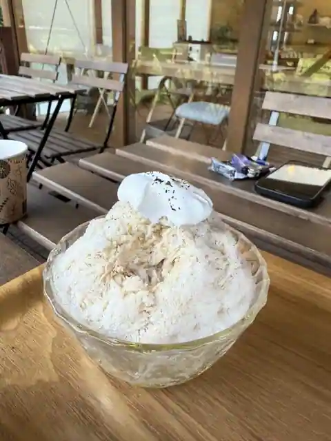
Okashino Ie Repos
杉や
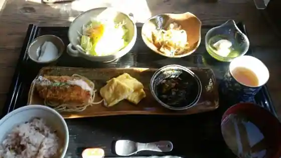
Sugi Ya
喫茶まるきゅう
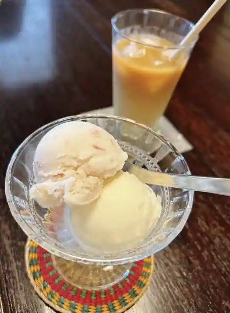
Kissa Marukyu
gochisou Lab KOCHI
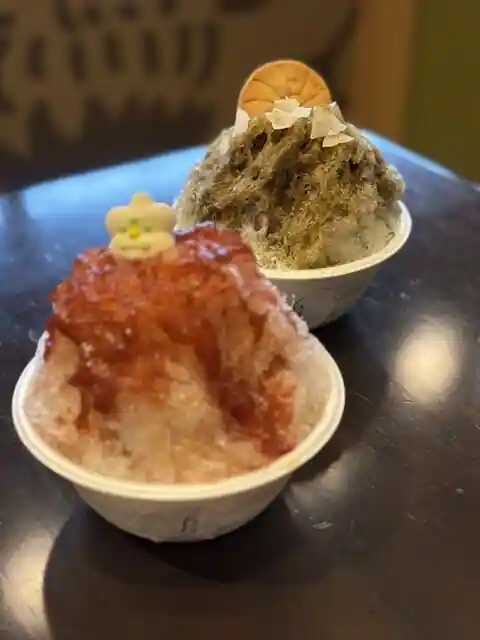
gochisou Lab KOCHI
コノミ
Konomi
田舎屋
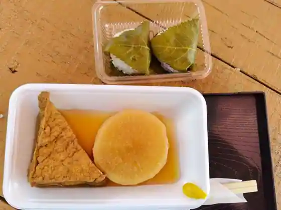
Inaka Ya
ひさ川
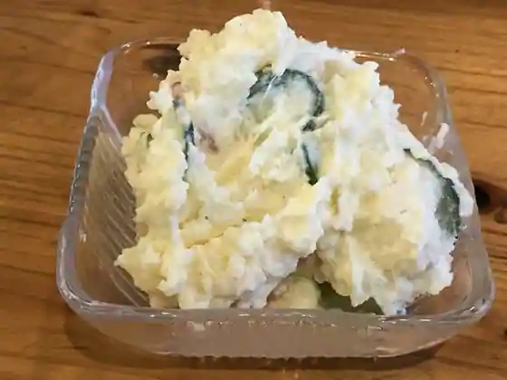
Hisa Kawa
KTiファーム
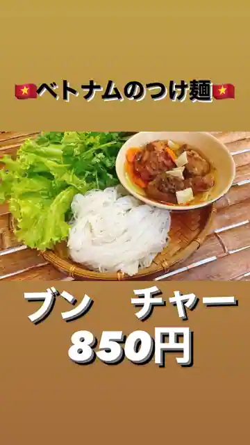
KTi Famu
さかわのお山のわるさん房
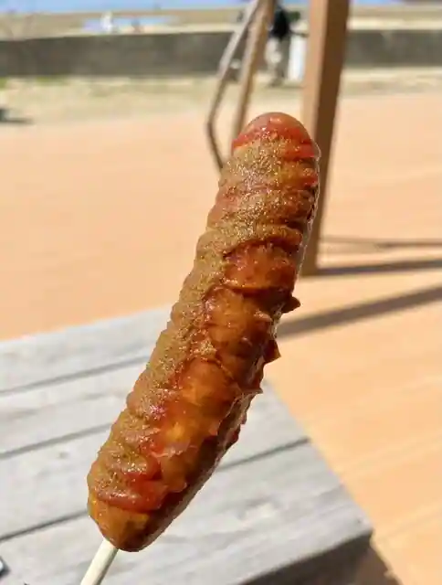
Sakawano Yama Nowarusan Bo
Cafe MER
Cafe MER
にしむらパン
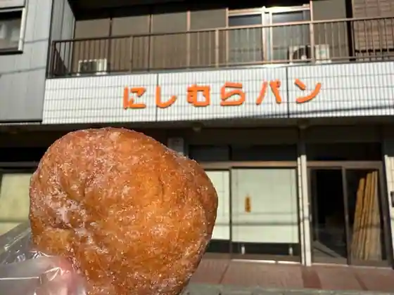
Nishimura Bakery
豚太郎 佐川店
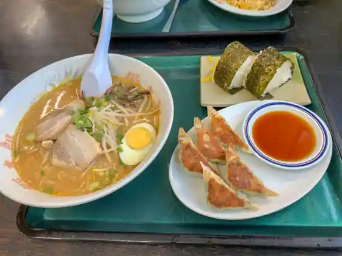
Buta Taro Sagawa
Sights
Makino Park
Ao Gen Tera

Tsukasa Botan Shuzo

Sakawa Chishitsu Kan

Sakawa Town Hall
Kyu Hamaguchi Ie House
Take Village Ie House
Aoyama Bunko
Makino Tomitaro Furusato Kan
Sakawa Bunko Ko Sha (Kyu Aoyama Bunko)
Mei Kyo Kan
Kyu Take Village Gofuku Mise (Kirin Kan)
Mei Kyo Yakatato
Ito Ran Hayashi no Terakoya
Shakudo Toge
Sakawa Ritsu Sakura Za
Kinpo Shrine
Jo Dai Tera
Naumankarusuto
Kokuzo Yama Tourist Farm Furutsu Land
Goi Yama Green Park
Ryuo Park
Tsuchimoto Kanko Orchard
Fudogaiwaya Dokutsu Iseki
Furuhata Tanada
Kishi Ya Ato
Kamo Chiku Baikaoren Gunsei Chi
Maki no San no Roadside Station Sakawa
Sakawa Omocha Art Museum
Uemachi Eki (Sakawa Tourism Association)